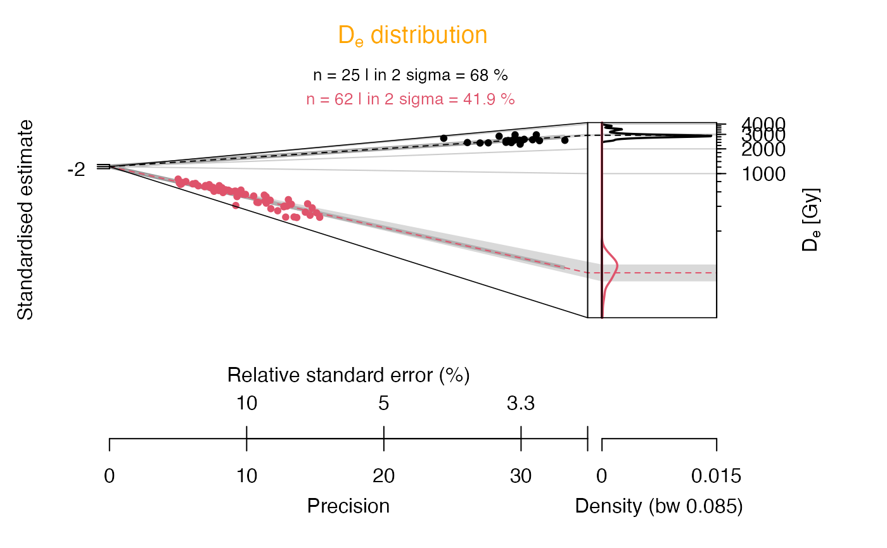
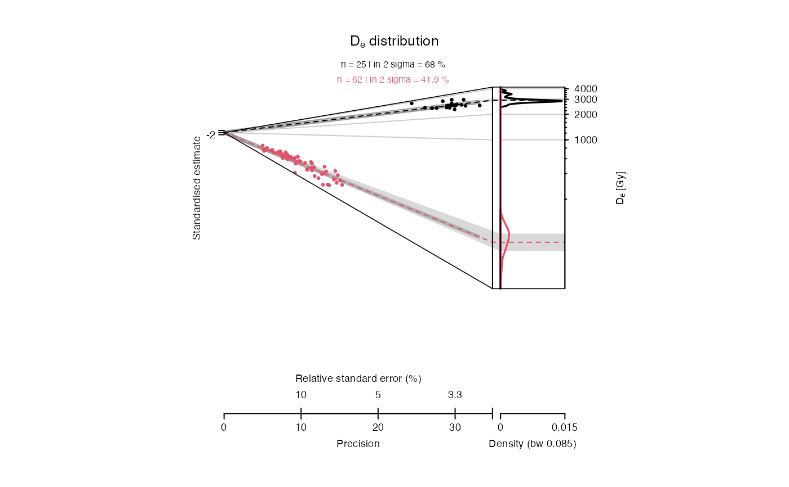

This helper function returns a list with layout definitions for homogeneous plotting.
get_Layout(layout)
| layout | character or list object (required):
name of the layout definition to be returned. If name is provided the
respective definition is returned. One of the following
supported layout definitions is possible: User-specific layout definitions must be provided as a list object of predefined structure, see details. |
|---|
A list object with layout definitions for plot functions.
The easiest way to create a user-specific layout definition is perhaps to
create either an empty or a default layout object and fill/modify the
definitions (user.layout <- get_Layout(data = "empty")).
0.1
Michael Dietze, GFZ Potsdam (Germany) , RLum Developer Team
Dietze, M., 2021. get_Layout(): Collection of layout definitions. Function version 0.1. In: Kreutzer, S., Burow, C., Dietze, M., Fuchs, M.C., Schmidt, C., Fischer, M., Friedrich, J., Mercier, N., Philippe, A., Riedesel, S., Autzen, M., Mittelstrass, D., Gray, H.J., Galharret, J., 2021. Luminescence: Comprehensive Luminescence Dating Data Analysis. R package version 0.9.16. https://CRAN.R-project.org/package=Luminescence
## read example data set data(ExampleData.DeValues, envir = environment()) ## show structure of the default layout definition layout.default <- get_Layout(layout = "default") str(layout.default) #> List of 2 #> $ abanico:List of 5 #> ..$ font.type:List of 14 #> .. ..$ main : chr "" #> .. ..$ xlab1 : chr "" #> .. ..$ xlab2 : chr "" #> .. ..$ ylab : chr "" #> .. ..$ zlab : chr "" #> .. ..$ xtck1 : chr "" #> .. ..$ xtck2 : chr "" #> .. ..$ xtck3 : chr "" #> .. ..$ ytck : chr "" #> .. ..$ ztck : chr "" #> .. ..$ mtext : chr "" #> .. ..$ summary: chr "" #> .. ..$ stats : chr "" #> .. ..$ legend : chr "" #> ..$ font.size:List of 15 #> .. ..$ main : num 12 #> .. ..$ xlab1 : num 12 #> .. ..$ xlab2 : num 12 #> .. ..$ xlab3 : num 12 #> .. ..$ ylab : num 12 #> .. ..$ zlab : num 12 #> .. ..$ xtck1 : num 12 #> .. ..$ xtck2 : num 12 #> .. ..$ xtck3 : num 12 #> .. ..$ ytck : num 12 #> .. ..$ ztck : num 12 #> .. ..$ mtext : num 10 #> .. ..$ summary: num 10 #> .. ..$ stats : num 10 #> .. ..$ legend : num 10 #> ..$ font.deco:List of 15 #> .. ..$ main : chr "bold" #> .. ..$ xlab1 : chr "normal" #> .. ..$ xlab2 : chr "normal" #> .. ..$ xlab3 : chr "normal" #> .. ..$ ylab : chr "normal" #> .. ..$ zlab : chr "normal" #> .. ..$ xtck1 : chr "normal" #> .. ..$ xtck2 : chr "normal" #> .. ..$ xtck3 : chr "normal" #> .. ..$ ytck : chr "normal" #> .. ..$ ztck : chr "normal" #> .. ..$ mtext : chr "normal" #> .. ..$ summary: chr "normal" #> .. ..$ stats : chr "normal" #> .. ..$ legend : chr "normal" #> ..$ colour :List of 29 #> .. ..$ main : num 1 #> .. ..$ xlab1 : num 1 #> .. ..$ xlab2 : num 1 #> .. ..$ xlab3 : num 1 #> .. ..$ ylab : num 1 #> .. ..$ zlab : num 1 #> .. ..$ xtck1 : num 1 #> .. ..$ xtck2 : num 1 #> .. ..$ xtck3 : num 1 #> .. ..$ ytck : num 1 #> .. ..$ ztck : num 1 #> .. ..$ mtext : num 1 #> .. ..$ summary : num 1 #> .. ..$ stats : num 1 #> .. ..$ legend : num 1 #> .. ..$ centrality: num 1 #> .. ..$ value.dot : num 1 #> .. ..$ value.bar : num 1 #> .. ..$ value.rug : num 1 #> .. ..$ poly.line : logi NA #> .. ..$ poly.fill : chr "#BFBFBF99" #> .. ..$ bar.line : logi NA #> .. ..$ bar.fill : chr "grey60" #> .. ..$ kde.line : num 1 #> .. ..$ kde.fill : logi NA #> .. ..$ grid.major: chr "grey80" #> .. ..$ grid.minor: chr "none" #> .. ..$ border : num 1 #> .. ..$ background: logi NA #> ..$ dimension:List of 22 #> .. ..$ figure.width : chr "auto" #> .. ..$ figure.height: chr "auto" #> .. ..$ margin : num [1:4] 10 10 10 10 #> .. ..$ main.line : num 100 #> .. ..$ xlab1.line : num 90 #> .. ..$ xlab2.line : num 90 #> .. ..$ xlab3.line : num 90 #> .. ..$ ylab.line : num 100 #> .. ..$ zlab.line : num 70 #> .. ..$ xtck1.line : num 100 #> .. ..$ xtck2.line : num 100 #> .. ..$ xtck3.line : num 100 #> .. ..$ ytck.line : num 100 #> .. ..$ ztck.line : num 100 #> .. ..$ xtcl1 : num 100 #> .. ..$ xtcl2 : num 100 #> .. ..$ xtcl3 : num 100 #> .. ..$ ytcl : num 100 #> .. ..$ ztcl : num 100 #> .. ..$ rugl : num 100 #> .. ..$ mtext : num 100 #> .. ..$ summary.line : num 100 #> $ kde :List of 5 #> ..$ font.type:List of 9 #> .. ..$ main : chr "" #> .. ..$ xlab : chr "" #> .. ..$ ylab1 : chr "" #> .. ..$ ylab2 : chr "" #> .. ..$ xtck : chr "" #> .. ..$ ytck1 : chr "" #> .. ..$ ytck2 : chr "" #> .. ..$ stats : chr "" #> .. ..$ legend: chr "" #> ..$ font.size:List of 9 #> .. ..$ main : num 14 #> .. ..$ xlab : num 12 #> .. ..$ ylab1 : num 12 #> .. ..$ ylab2 : num 12 #> .. ..$ xtck : num 12 #> .. ..$ ytck1 : num 12 #> .. ..$ ytck2 : num 12 #> .. ..$ stats : num 12 #> .. ..$ legend: num 12 #> ..$ font.deco:List of 9 #> .. ..$ main : chr "bold" #> .. ..$ xlab : chr "normal" #> .. ..$ ylab1 : chr "normal" #> .. ..$ ylab2 : chr "normal" #> .. ..$ xtck : chr "normal" #> .. ..$ ytck1 : chr "normal" #> .. ..$ ytck2 : chr "normal" #> .. ..$ stats : chr "normal" #> .. ..$ legend: chr "normal" #> ..$ colour :List of 20 #> .. ..$ main : num 1 #> .. ..$ xlab : num 1 #> .. ..$ ylab1 : num 1 #> .. ..$ ylab2 : num 1 #> .. ..$ xtck : num 1 #> .. ..$ ytck1 : num 1 #> .. ..$ ytck2 : num 1 #> .. ..$ box : num 1 #> .. ..$ mtext : num 2 #> .. ..$ stats : num 1 #> .. ..$ kde.line : num 1 #> .. ..$ kde.fill : NULL #> .. ..$ value.dot : num 1 #> .. ..$ value.bar : num 1 #> .. ..$ value.rug : num 1 #> .. ..$ boxplot.line: num 1 #> .. ..$ boxplot.fill: NULL #> .. ..$ mean.point : num 1 #> .. ..$ sd.line : num 1 #> .. ..$ background : NULL #> ..$ dimension:List of 14 #> .. ..$ figure.width : chr "auto" #> .. ..$ figure.height: chr "auto" #> .. ..$ margin : num [1:4] 10 10 10 10 #> .. ..$ main.line : num 100 #> .. ..$ xlab.line : num 100 #> .. ..$ ylab1.line : num 100 #> .. ..$ ylab2.line : num 100 #> .. ..$ xtck.line : num 100 #> .. ..$ ytck1.line : num 100 #> .. ..$ ytck2.line : num 100 #> .. ..$ xtcl : num 100 #> .. ..$ ytcl1 : num 100 #> .. ..$ ytcl2 : num 100 #> .. ..$ stats.line : num 100 ## show colour definitions for Abanico plot, only layout.default$abanico$colour #> $main #> [1] 1 #> #> $xlab1 #> [1] 1 #> #> $xlab2 #> [1] 1 #> #> $xlab3 #> [1] 1 #> #> $ylab #> [1] 1 #> #> $zlab #> [1] 1 #> #> $xtck1 #> [1] 1 #> #> $xtck2 #> [1] 1 #> #> $xtck3 #> [1] 1 #> #> $ytck #> [1] 1 #> #> $ztck #> [1] 1 #> #> $mtext #> [1] 1 #> #> $summary #> [1] 1 #> #> $stats #> [1] 1 #> #> $legend #> [1] 1 #> #> $centrality #> [1] 1 #> #> $value.dot #> [1] 1 #> #> $value.bar #> [1] 1 #> #> $value.rug #> [1] 1 #> #> $poly.line #> [1] NA #> #> $poly.fill #> [1] "#BFBFBF99" #> #> $bar.line #> [1] NA #> #> $bar.fill #> [1] "grey60" #> #> $kde.line #> [1] 1 #> #> $kde.fill #> [1] NA #> #> $grid.major #> [1] "grey80" #> #> $grid.minor #> [1] "none" #> #> $border #> [1] 1 #> #> $background #> [1] NA #> ## set Abanico plot title colour to orange layout.default$abanico$colour$main <- "orange" ## create Abanico plot with modofied layout definition plot_AbanicoPlot(data = ExampleData.DeValues, layout = layout.default)  ## create Abanico plot with predefined layout "journal" plot_AbanicoPlot(data = ExampleData.DeValues, layout = "journal") 